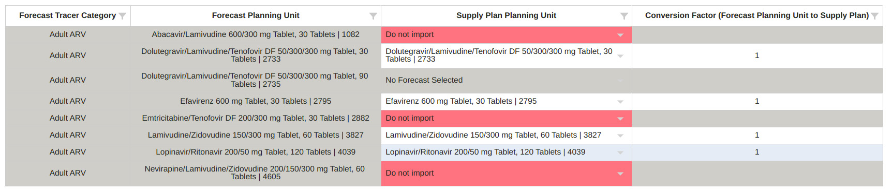
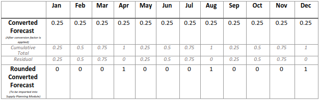
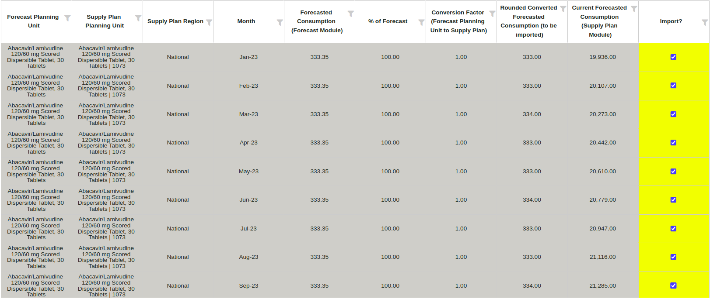

Importation des
prévisions QAT
But
:Permettre aux utilisateurs d'importer des prévisions créées dans
QAT dans des programmes de plan d'approvisionnement. Les prévisions ne
peuvent être importées que si 1) elles sont validées en tant que version
finale et 2) une prévision est sélectionnée pour chaque unité de
planification.
Utilisation de cet
écran:
(Etape 1)
- Sélectionner le programme de prévision à importer (seules les prévisions
finales sont disponibles)
- Sélectionner le programme du plan d'approvisionnement vers lequel
importer.
- Sélectionner la période des données de prévision à importer, qui sont
limitées comme suit:
- Doit être compris dans la période de prévision
- La consommation prévue que vous pouvez importer ne doit pas être
ancienne de plus de 6 mois par rapport au mois en cours.
- Si la période de prévision entière remonte à plus de 6 mois dans
le passé, la prévision ne peut pas être importée et la version
n'apparaîtra pas dans la liste déroulante du programme.
- Dans le tableau qui s'affiche, sélectionner et faire correspondre les
unités de planification.
- Pour chaque unité de planification du module prévision, QAT
requiert une unité de planification correspondante du module
plan d'approvisionnement et un facteur de conversion. QAT marque
automatiquement les correspondances exactes entre les unités de
planification, mais les utilisateurs peuvent remplacer à la fois
les correspondances des unités de planification et le facteur de
conversion.
- Toutes les unités de planification du module prévision n'ont pas
besoin d'être importées, cependant, toutes les unités de
planification du module prévision doivent avoir une sélection
dans la table de correspondance. Par exemple, dans le tableau
ci-dessous, même si 2 produits ne sont pas importés, vous devrez
toujours sélectionner "Ne pas importer".

(Etape 2) Région(s) de prévision:
- Prévision nationale au plan d'approvisionnement national
| Région(s) de prévision |
% de Prévision |
Région du plan d'approvisionnement |
| National |
100 |
National |
- Prévision multirégionale vers plan d'approvisionnement multirégional
| Région(s) de prévision |
% de Prévision |
Région du plan d'approvisionnement |
| Nord |
100 |
Nord |
| Est |
100 |
Est |
| Sud |
100 |
Sud |
- Prévision multirégionale au plan d'approvisionnement national -
| Région(s) de prévision |
% de Prévision |
Région du plan d'approvisionnement |
| Nord |
100 |
National |
| Est |
100 |
National |
| Sud |
100 |
National |
- Prévision nationale vers plan d'approvisionnement multirégional : notez
que le processus d'importation doit être répété pour chaque région du
plan d'approvisionnement.
| Région(s) de prévision |
% de Prévision |
Région du plan d'approvisionnement |
| National |
20 |
Nord |
| Région(s) de prévision |
% de Prévision |
Région du plan d'approvisionnement |
| National |
45 |
Sud |
| Région(s) de prévision |
% de Prévision |
Région du plan d'approvisionnement |
| National |
35 |
Est |
(Etape 3)
QAT listera chaque enregistrement de prévision à
importer (une ligne pour chaque combinaison d'unité de planification, de
région et de mois).
- QAT calcule la consommation prévisionnelle à importer comme suit:
Pour l'exemple suivant:
- Une prévision nationale qui sera divisée en deux régions de 50 %
chacune
- L'unité de planification prévisionnelle est en pack de 3, et l'unité
de planification plan d'approvisionnement est en pack de 1 (facteur
de conversion = 3)
- La prévision nationale pour le Mois N était de 100 (paquet de 3)
- Une prévision de 100 x 50 % x 3 = 150,00 arrondis (packs de 1) sera importée dans chaque région pour le mois N
- Méthode d'arrondi: Because QAT Supply Planning nécessite des nombres entiers sans décimales, QAT convertit la consommation prévue en nombres entiers en arrondissant et en additionnant les « résidus » au fil du temps. Chaque mois, QAT additionne le total des résidus du mois dernier et les prévisions de ce mois-ci, avant d'arrondir à l'inférieur, et tout résidu non arrondi à l'inférieur est ajouté à un total résiduel courant, appelé Total Cumulatif. De cette façon, les quantités ne sont pas perdues lors du processus d’arrondi.
- Formules:
- Total cumulé pour le mois N = (Résiduel pour le Mois N - 1) + Prévision Convertie pour le Mois N
- Résidu pour le mois N = Combien a été perdu lors de l'arrondi = (Total cumulé pour le mois N) – (Prévision convertie arrondie pour le mois N)
- Prévisions converties arrondies pour le mois N = Total cumulé pour le mois N, arrondi à l'entier inférieur le plus proche
- Par exemple, une prévision nationale devrait consommer 0,25 pack de l'unité de planification des prévisions par mois, pendant 12 mois. L'unité de planification des prévisions et l'unité de planification du plan d'approvisionnement sont identiques (facteur de conversion = 1)
- En janvier, la consommation convertie est de 0,25, et comme c'est le premier mois, le 0,25 est également le total cumulé de janvier. 0,25 est arrondi à un nombre entier égal à 0, et le nombre arrondi de 0 est importé dans le module de planification des approvisionnements. Le résidu de janvier résultant des arrondis est de 0,25 – 0 = 0,25.
- En février, la consommation convertie est de 0,25, ajoutée au résiduel de janvier de 0,25, ce qui donne au total cumulé de février 0,25 + 0,25 = 0,5. Ensuite, 0,5 est arrondi à un nombre entier de 0, qui est importé dans le module de planification des approvisionnements. Le résiduel de février après arrondi est de 0,5 – 0 = 0,5.
- En mars, la consommation convertie est de 0,25, ajoutée au résiduel de février de 0,5, ce qui donne au total cumulé de mars 0,25 + 0,5 = 0,75. Ensuite, 0,75 est arrondi à un nombre entier de 0, qui est importé dans le module de planification des approvisionnements. Le résidu de mars après arrondi est de 0,75 – 0 = 0,75.
- En avril, la consommation convertie est de 0,25, ajoutée au résiduel de mars de 0,75, ce qui donne au total cumulé d'avril 0,25 + 0,75 = 1,00. Ensuite, 1,00 est arrondi à un nombre entier de 1,00, qui est importé dans le module de planification des approvisionnements. Le résidu d’avril résultant de l’arrondi est de 1,00 – 1,00 = 0.
- À partir du mois de mai, le cycle se répète.

- S'il existe une consommation prévisionnelle dans le plan
d'approvisionnement, la cellule « Consommation actuelle prévue » sera
surlignée en jaune.
- S'il existe une consommation prévue dans le plan d'approvisionnement et que les données de consommation prévue que l'utilisateur tente d'importer datent de plus de 4 mois, la cellule « Consommation actuelle prévue » sera surlignée en gris et ne sera PAS importée.
- la colonne Utiliser l'Importation ? permet de désélectionner les
prévisions que vous ne souhaitez pas importer dans le plan
d'approvisionnement. Si cette case est cochée, la consommation prévue
convertie remplacera la prévision du plan d'approvisionnement. Si elle
n'est pas cochée, la prévision actuelle du plan d'approvisionnement sera
conservée.

|